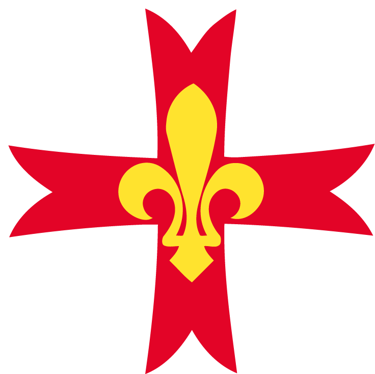

La méthode scoute de l’AGSE

L’Association des Guides et Scouts d’Europe (AGSE) est un mouvement de scoutisme catholique.
Elle s’appuie sur la pédagogie de Baden-Powell, adaptée par le père Jacques Sevin et les fondateurs du scoutisme
français. Sa mission est de former des jeunes chrétiens équilibrés, responsables et joyeux, capables de servir
Dieu, leur patrie et leur prochain.
La méthode scoute repose sur quelques principes essentiels : la vie dans la nature, l’éducation par le jeu,
la progression personnelle, la confiance dans les jeunes, la prise de responsabilités dans de petites équipes,
et l’enracinement spirituel.
Les trois branches pédagogiques
Le mouvement est organisé en trois grandes branches, correspondant aux étapes de la croissance des jeunes.
Chacune a sa couleur, sa pédagogie propre et son imaginaire.
Branche Jaune – Louveteaux et Louvettes (8-12 ans)
C’est l’âge de l’enfance et de la découverte. Le jeu y tient une place centrale : il permet
d’apprendre la vie en communauté, l’obéissance joyeuse et le sens du service.
L’univers imaginaire du Livre de la Jungle sert de cadre aux activités.
- Apprendre à vivre ensemble dans la meute ou la clairière.
- Découvrir la nature à travers les grands jeux, les chasses, les veillées.
- Grandir dans la fidélité et la joie grâce à la Promesse.
Branche Verte – Éclaireurs et Guides (12-17 ans)
C’est l’âge de l’adolescence, marqué par le goût de l’aventure et la recherche d’autonomie.
La pédagogie repose sur la vie en patrouille ou en escouade :
de petites équipes de jeunes, menées par un chef choisi parmi eux.
- Responsabilités progressives : chaque éclaireur/guide a un rôle concret.
- Apprentissage des techniques scoutes : campisme, orientation, secourisme, observation, etc.
- Vie fraternelle marquée par la loi scoute, les veillées, les camps d’été et les raids.
- Progression personnelle vers les classes (Seconde, Première, etc.) et la Promesse.
Branche Rouge – Routiers et Guides-Aînées (17-25 ans)
C’est l’âge des choix de vie et de l’engagement. La branche rouge accompagne les jeunes adultes dans
leur chemin vers la maturité humaine et chrétienne. On y met l’accent sur le service,
la vie spirituelle et la responsabilité.
- Vie en feu (guides-aînées) ou en clan (routiers).
- Progression marquée par les flots (jaune, vert, rouge) ou la Route.
- Expériences fortes : pèlerinages, camps de service, missions humanitaires ou ecclésiales.
- Préparation à l’engagement adulte : vie familiale, professionnelle et ecclésiale.
Organisation et hiérarchie du mouvement
L’AGSE est structurée de manière à respecter le principe de subsidiarité : les décisions sont prises
au plus près des unités, tout en garantissant l’unité de la pédagogie et de la vie associative.
Niveaux locaux
- L’unité : meute, clairière, troupe, compagnie, clan ou feu. C’est le cœur de la vie scoute.
- Le groupe : rassemble plusieurs unités, autour d’une même paroisse ou localité.
- Le district : regroupe plusieurs groupes d’un même secteur géographique.
- La province : couvre une grande région (ex. Province Île-de-France).
Niveaux nationaux
- Le commissaire général scout et la commissaire générale guide dirigent l’ensemble du mouvement.
- Ils sont entourés d’une équipe nationale (commissaires de branche, responsables de la formation, aumônier national, etc.).
- Les grandes orientations sont décidées par le Conseil d’Administration et validées par l’Assemblée Générale.
Un mouvement ecclésial
Fidèle à l’Église catholique, l’AGSE est accompagné par de nombreux prêtres, diacres et religieux,
et reconnu par la Conférence des évêques de France. Chaque groupe est confié à un aumônier qui accompagne
spirituellement les jeunes et les chefs.